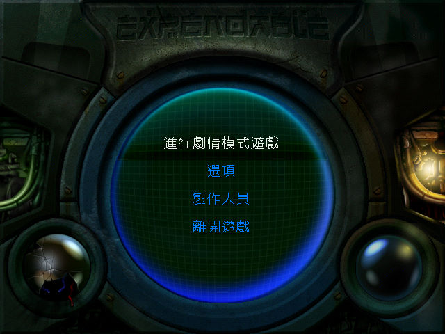
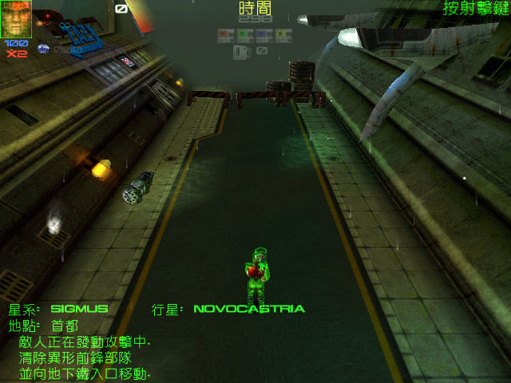
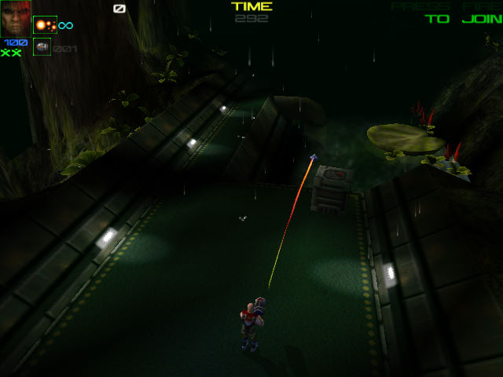

名稱：威力掃蕩 (威力掃蕩，中文／英文版) 簡介：Rage 1999年出品的第三人稱射擊遊戲，由飛拓中文化並代理發行 [待補]。


保護：光碟 備註：非安裝移植者，必須修改config.dat中的CdRom位置。 限制：中文版無法在XP以上系統執行（會產生Exception），請使用PCem+Win9x系統執行。 備註：英文版VirtualBox需搭配WineD3D，但仍有貼圖問題，虛擬機建議使用VMware。 備註：中文版與英文版內容不太相同，玩完中文版也可再玩英文版。